Towas (Tourist Web Assistant) is a responsive multi-device application developed for persons who likes to plan everything about trips or holydays. It may be found usefull in situation like a person wants to escape from the daily routine and needs to have some fun somewhere. The application is is capable to recommend places depending the user needs, based on the historical experience of the user correlated with semantic web technologies.
Towas follows Microservices Oriented Achitecture and uses Java Spring Boot as base technology. It also use SparQL interrogation language to provide information about locations, places, touristic objective, restaurants or hotels.
Use Cases
The user is "traditionally" greeted by a login page, where he/she is supposed to enter his/her credentials (an username and a password) in order to be allowed to plan a new trip or to see his previous itinieraries planned with toWas.
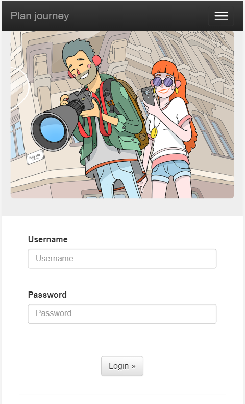
Login page
Once he enters the right credentials, the user will be further redirected. If not, he/she will ramain on the login page.
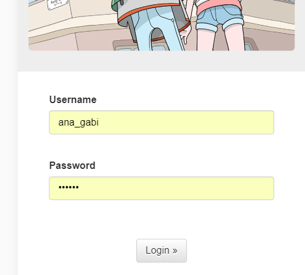
Login credentials exemple
If the login is successful, the user is further redirected to the countries page. Here there are shown a list with available countries for travelling and also a description for each country.
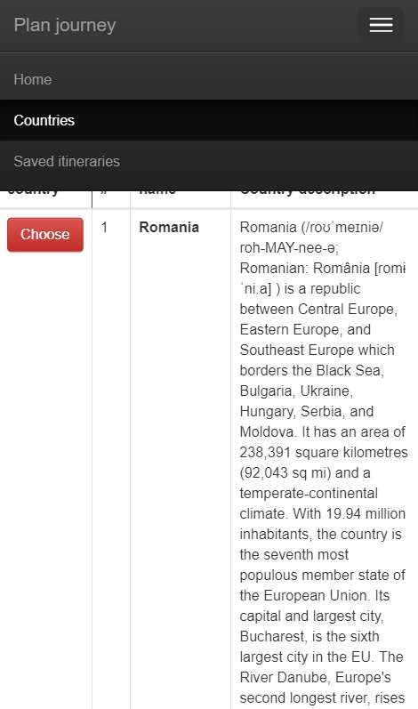
Countries page
In fact, these countries are stored behind in our triple store and they are retrived by a GET method through a SparQL query.
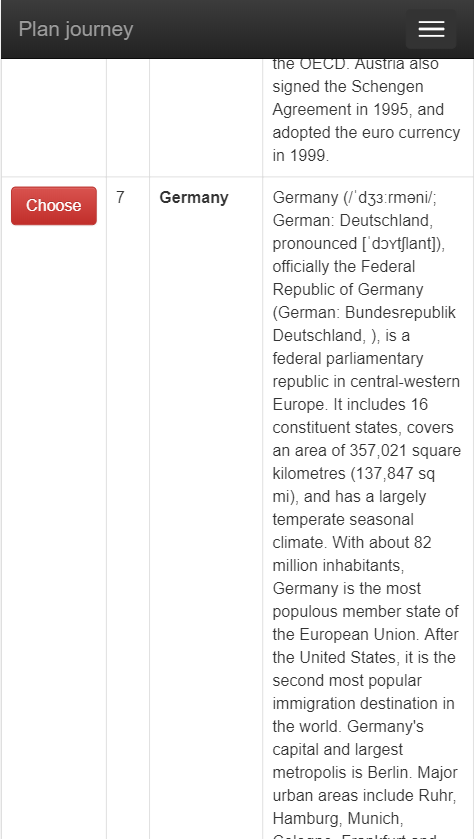
Navigating through the countries
In order to go further, the user is supposed to chose one of the activities shown in the scrollbar from the top of the page in which he is interested in and choose the country he wants to travel be pressing corresponding the red button.
Activities select bar
Let's suppose we select the Sightseeing activity and want to go to Italy.
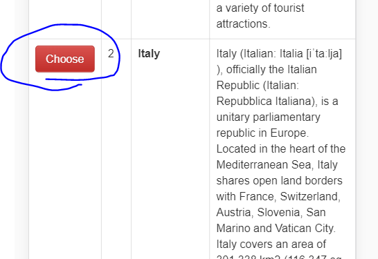
Choosing Italy
After selecting our favorite activity and clicking on the choose button, the user is redirected to the localities page. Simmilar to the previous one, this page is displaying to the user a list of populated places (cities) from the country he has already chosen, places that are also related with the activity he has selected.
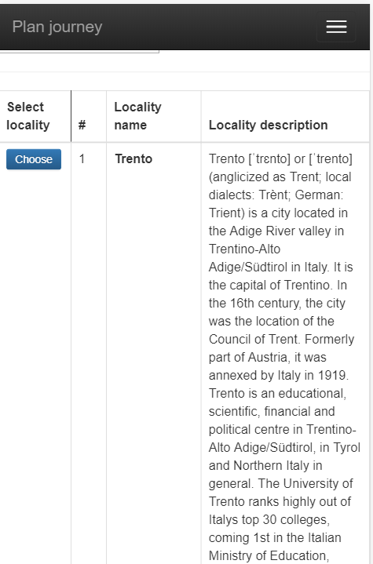
Cities page
To be more specific, if we chose Sightseeing as activity, it is clear that this is related to a place which have museums and other cultural attractions such as monuments or castels. So the localities page will display for our user those Italy localities which have in their proximity cultural touristic objectives.
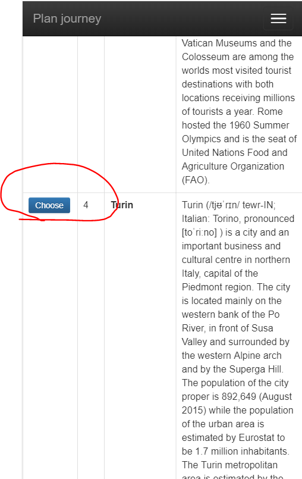
Navigating through localities page
Again, by pressing the blue choose button corresponding for a certain place, we assume the user wants to make an itinerary to that place. Let's suppose we choose to go to Turin.
After selecting his desired city, the user is greeted by a new page that is showing him various types of touristics objectives (cultural and natural), restaurants where he/she can have a lunch and accomodations to spend his nights, from the selected locality.
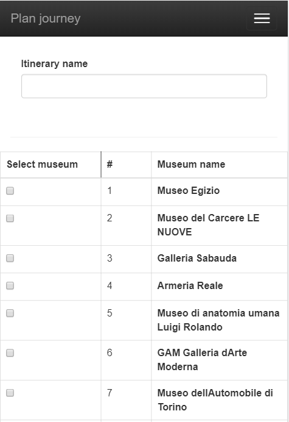
Touristic objectives page
The user has at his disposal some check box buttons, in order to chose those objectives he plannes to visit in his itinerary. Also, at the top of the page he has a field to complete a name for his itinerary.
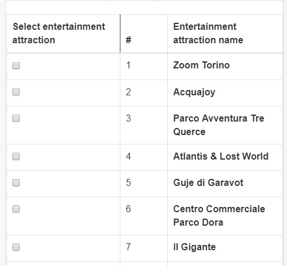
Navigating through touristic objectives.
After completing the name and selecting his favorite attraction, the user can go to th button of the page and click the red save button. Through this option, the user can save his itinerary and review it later.
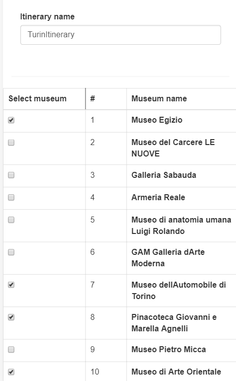
Selecting the itinerary
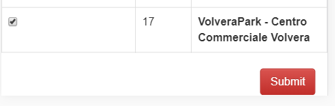
Saving the itinerary
Actually, the selected trip will be saved in our toWas triple store, as standard statements .
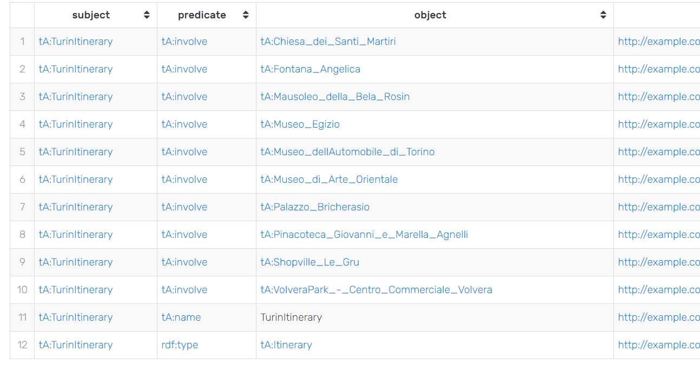
The itinerary saved in the triple store.
Conclusions
TOWAS (Tourist Web Assitant) is an application destinated for those people who like traveling and need fast and dynamic information about their desired location to be visited based on semantic web technologies. The application uses the experience, saving the user previous itineraries. The app could be improved with an adviser service (previously mentioned in the design component), which could give him suggestions of accomodations, restaurants and others, based on the current user geographic position (logitude and latitude) - GPS integration. Also, it can be improved with a machine learning based mechanism in order to recognize a specific profile of the user and offer recommendations based on these information too.